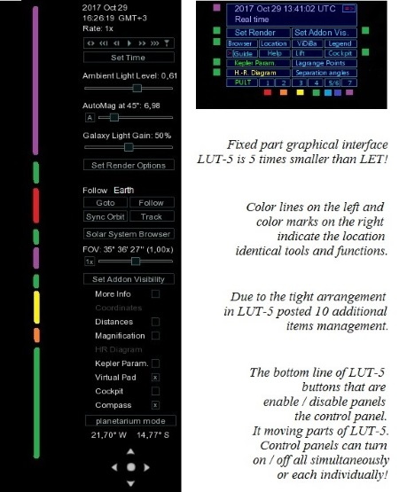
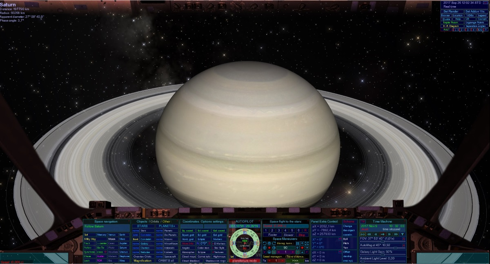
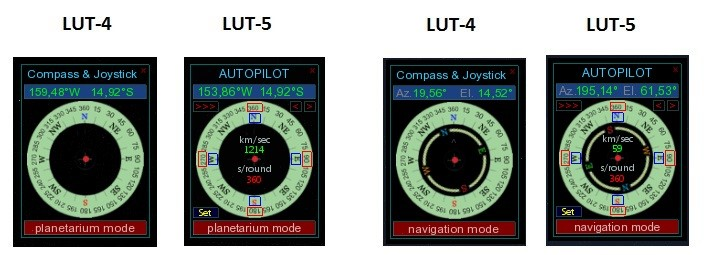
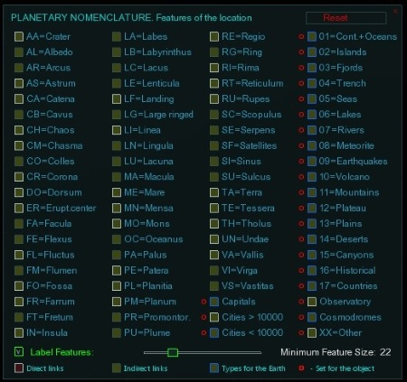
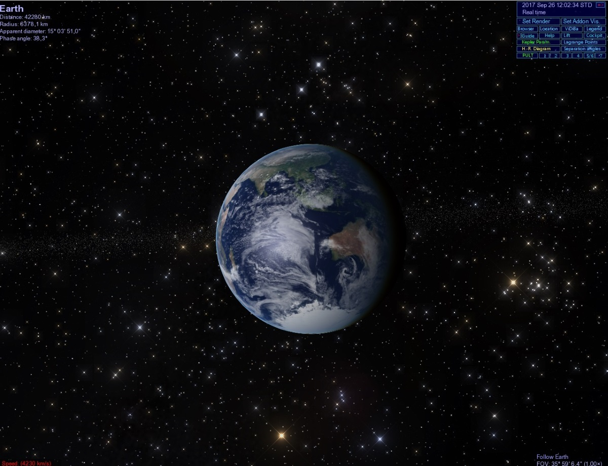

The Lua Universal Tools v5.0 GUI (LUT-5 suite) is designed for Celestia. Celestia's management is done using keyboard commands with a total of 129 key combinations. Some functions have no shortcuts. The control of these functions is provided using the menu. The large number of these commands is a considerable disadvantage in working with Celestia.
Programmers Vincent Giangiulio and Hank Ramsey in 2007, designed the GUI Lua Edu Tools v1.2 beta 8. Lua Edu Tools (LET suite) was designed primarily for use in educational institutions (schools, institutes, universities) and was intended to facilitate the user's work with the Celestia program. Over time, this supplement quickly gained popularity among ordinary users by attaching additional features that did not exist in the official version.
As of 2013, LET is updated under a new name - Lua Universal Tools (LUT).

New tools in the Lua Universal Tools v4.0:
- Virtual Base to the asteroids and the comets (VIDIBA)
- The points of the Lagrange - addon
- A space elevator
- Information panel
New tools in the Lua Universal Tools v5.0:
The Auto-pilot (modernisation of the Compass & Joystick) These features have been added to the display:
- Buttons with a red border - similar to the commands Shift + arrows. When you click on one of the four, begins the orbital motion around the planet (or another object). On the button, a blue circle appears as a witness.
- Button [>>>] sets the time required for one orbital revolution in seconds (360-300-270-240-210-180-150-120-90-60-30-20-10-5). The buttons [<] / [>] are designed for time correction of -10 /+10 seconds, in the interval of 60 seconds and more, -5/+5 in a span of less than 30 seconds. The total value of time appears below the initial position of the cursor of the joystick (red dot).
- At the top of the slider is counter to orbital speed in km/s.
Planetography (Celestia) / Nomenclature planetary (LUT-5)
 The panel "Geography" (Celestia) contains 10 checkboxes (10 types of locations). One of the "Nomenclature Planetary" (LUT-5) contains 80 check boxes (80 types of locations). This panel allows you to enable / disable each location type separately on the object selected.
The Lua Universal Tools v5.0 graphical interface occupies the smallest possible area on the screen. When you start Celestia, the graphical interface looks like the image below:  The graphical interface is located in the upper right corner of the screen. The controls are located on 9 lines. When working with a smaller monitor, the graphical interface of LUT-5 changes modes. The minimum permitted size of the screen (the window), which maintains the geometry of the control LUT-5 is 900 x 750 pixels.
All panels can be moved around the screen by the mouse (top edge of the panel). All panels are on or off individually. When the window is minimized and the window is extended to full screen, the control Panel is aligned in a row at the bottom of the screen.
Let/LUT-5 comparative parameters:
- Total keyboard commands = 129
- LET replaces 50 keyboard commands, this is ~ 40%
- LUT-5 replaces 112 keyboard commands this is ~ 90%!
- In LET, there are 35 tools and functions.
- There are 96 tools and functions in the LUT-5
- This is ~ 3 times more!
Preparing to Install:
1. Remove from Celestia folder:
- "Lua_edu_tools" folder with all content (if there's)
- Add line:
LuaHook "luahookinit.lua" - Edit line:
ExtrasDirectories ["lua-applications" "extras" "extras-standard"]
- Extract lut5-basic.zip file into "Celestia" folder and confirm file replacement
- Run Celestia
- Extract lut5-additions.zip file into "Celestia" folder and confirm file replacement
- Run Celestia